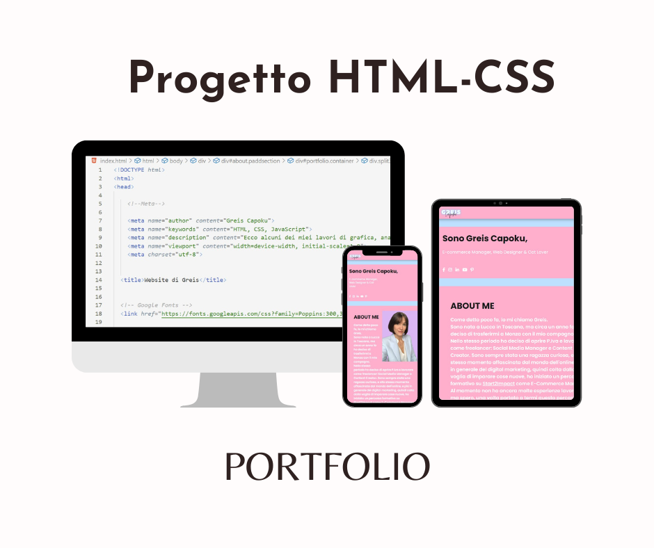
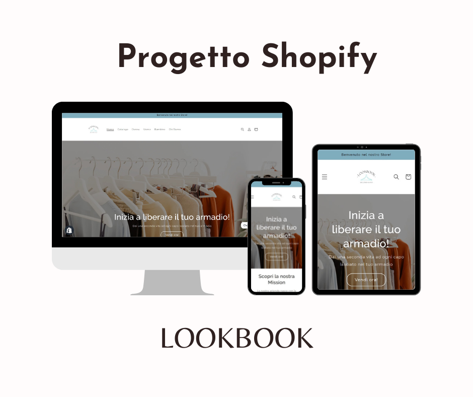
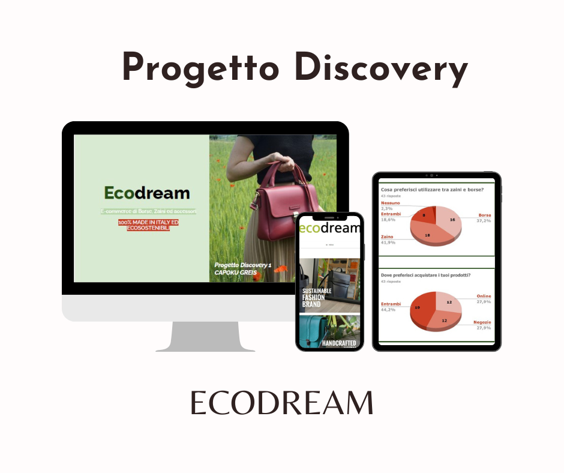

E-commerce Manager, Web Designer & Cat Lover
Come detto poco fa, io mi chiamo Greis.
Sono nata a Lucca in Toscana, ma circa un anno fa ho deciso di trasferirmi a Monza con il mio compagno.
Nello stesso periodo ho deciso di aprire P.Iva e lavorare come freelancer: Social Media Manager e Content Creator. Sono sempre stata una ragazza curiosa, e allo stesso momento affascinata dal mondo dell'online, e più in generale del digital marketing, quindi colta dalla voglia di imparare cose nuove, ho iniziato un percorso formativo su Start2Impact come E-Commerce Manager.
Al momento non ho ancora molte esperienze lavorative, ma spero, una volta portato a termi questo percorso, di poter collezionarne molte. Nel mio Portfolio sono presenti alcuni progetti che ho svolto per Start2Impact, e per iniziare a mettere in pratica tutto ciò che sto imparando.
Diciamo che questa è la storia più che altro di ciò che ho fatto e che vorrei fare, non esattamente chi sono. Per descrivere chi sono veramente potrei partire con il dire che sono una ragazza molto semplice, che ama la buona compagnia, i viaggi alla scoperta di nuove culture, gli animali (in particolare i gatti, e mentirei se ti dicessi che adesso NON ho un gatto sdraiato sulle mie gambe mentre scrivo) e la natura.

Per questo progetto mi sono occupata della creazione da zero di questo sito, grazie alle skill apprese su start2Impact nel capitolo HTML - CSS.
E' stato molto interessante, mi ha dato modo di dare sfogo alla mia creatività.

Per questo progetto mi sono occupata della creazione di un shop online di nome LOOKBOOK, anche questo progetto l'ho realizzato per mettere in pratoca ciò che ho appreso grazie a Start2Impact.

Per questo progetto mi sono occupata della ricerca utente, lo studio dei competitor e un'analisi approfondita dei dati per l'azienda di borse ecosostenibili EcoDream . L'obbiettivo era quello di simulare un lavoro di discovery da parte di un designer (fase fondamentale se si decide di cambiare qualcosa nella propria azienda a livello di interfaccia o esperienza utente).
Se ti va di metterti in contatto con me puoi farlo utilizzando i miei dati, oppure compilando il form dedicato. Verrai ricontattato entro 24H.